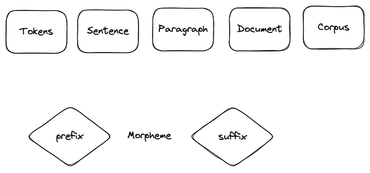

3. Normalization 정규화#

우리가 익히 알고 있는 정규화는 curr - min / max - min이다. 언어학과 자연어 처리에서 morpheme(형태소 : 의미를 가진 가장 작은 단위)라는 것이 단어의 기반으로 정의된다. 보통 token이라는 것은 두 개 이상의 morpheme의 합으로 구성된다. 접두사(prefix) 접미사(suffix)가 단어의 형태에 따라 변형되어 붙는다.
정규화는 ‘converting a token into its base form’하는 과정이다. inflection form → base form.
reducing the # of unique tokens present in the text
removing the variations of a word in the text
removing redundant information
3.1 stemming 어간 추출#
laughing, laughed, laughs, laugh → laugh 단점 : 가끔 사전에 없는 단어를 만들 수도 있다. 그래서 좋은 normalization은 아닐 수 있다. 또한 winning 같은 경우 원래의 stem은 win인데 winn으로 만들 수 있다.
from nltk.stem import WordNetLemmatizer
from nltk.stem import PosterStemmer, LancasterStemmer
from nltk.tokenize import word_tokenize
lemmatizer = WordNetLemmatizer()
보통 어간 추출 속도가 표제어 추출보다 빠르다.
3.2 lemmatization 표제어 추출#
Lemma 표제어는 ‘기본 사전형 단어’ 정도의 의미를 가지고 있다. 표제어 추출을 위해서는 기본적으로 POS(part of speech)가 필요하다. 형태학적 파싱(morphological parsing)을 하게되면 어간(stem)과 접사(affix)로 단어를 쪼개게 된다. 이러한 과정을 통해서 더 이상 쪼갤 수 없는 단위로 의미를 쪼개는 것이다. 이런 과정을 위해서 품사 정보를 고려하여 단어의 원형을 추출하는 것이 의미적으로 정확하고 일관된 결과를 얻는데 도움이 된다.
4. 문법 Grammer#
4.1 Constituency Grammar#
4.2 Dependency Grammar#
words of a sentence are dependent upon other words of the sentence
5. Subword Tokenizer 알고리즘#
Birthplace = Birth + Place
아무리 많이 학습시켜도 모르는 단어가 학습과정에서 나오기 마련이다. 이를 OOV(out-of-vocabulary), UNK(unknown token)이라고 말한다. OOV문제를 일으키는 단어는 보통 더 작은 단위로 쪼개면 아는 2개로 해석될 수 있는 합성어, 희귀 단어 혹은 신조어 인 경우가 많기 때문에 단어를 더 쪼개갰다는 의미이다.
5.1 Byte-Pair Encoding(BPE) 1994#
aaabdaaabac → (aa → Z) ZabdZabac → (ab → Y) ZYdZYac → (ZY → X) XdXac
데이터 압축 알고리즘이다. 기본적으로 연속적으로 가장 많이 등장한 글자의 쌍을 찾아서 하나의 글자로 병합하는 방식.
자연어 처리에서 BPE는 곧 subword segmentation 알고리즘을 말한다. 글자 단위에서 점차적으로 단어 집합을 만들어내는 bottom up 방식의 접근을 한다. 우선 훈련 데이터에 있는 단어들을 모든 글자 또는 유니코드 단위로 단어 집합을 만들고, 가장 많이 등장하는 유니그램을 하나의 유니그램으로 통합한다. 정리하자면 가장 빈번하게 등장하는 문자 혹은 subword의 쌍을 재귀적으로 합치며, 텍스트를 분할하는 방식이라고 볼 수 있다. 문제는 letter 수준에서 작동하기 때문에 단어 내의 내부 구조나 의미를 고려하진 않는다.
5.2 wordpiece tokenizer → for BERT#
bpe가 빈도수에 기반하여 가장 많이 등장한 쌍을 병합하는 것 과는 달리, 병합되었을 때 코퍼스의 우도 likelihood를 가장 높이는 쌍으로 구성. 모든 단어 앞에 를 붙이고 기존에 없던 띄어쓰기 추가. 되돌릴때는 띄어쓰기 모두 없애고 를 띄어쓰기화 하면 된다. BPE랑 비슷하긴 한데, 단어 수준에서 작동한다는게 다르다. BPE가 letter → token(subword) bottom up 방식이었다면, wordpiece는 word → token(subword) topdown 방식이라고 볼 수 있다. 또한 차이점은 단어 경계를 표시하는 특수 토큰[CLS],[SEP]등을 사용하여 서브워드를 생성할 수 있다는 것이다.
5.3 SentencePiece#
사전 토큰화 작업(pretokenization) 없이 전처리를 하지 않은 데이터(raw data)에 바로 단어 분리 토크나이저를 사용할 수 있음. 단어 분리 토큰화 수행 → 어떤 언어에도 바로 적용 가능.
6. Libraries#
spacy
c 기반, 빠름
그냥 이거 써라
nltk
쓸데없이 선택지 많음